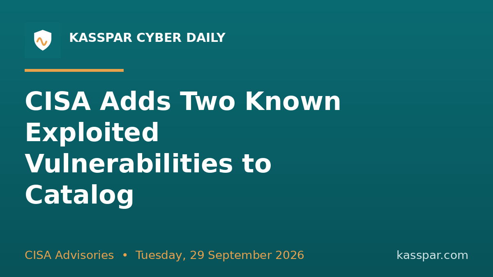

🔐 Apple Patches CoreGraphics Flaw Possibly Exploited in Targeted Attacks
Apple has released security updates to address a vulnerability in older versions of iOS, iPadOS, and macOS that it said may have been exploited in targeted attacks. The vulnerability, tracked as CVE-2026-86950, refers to an out-of-bounds write impacting the CoreGraphics component that could lead to arbitrary code…
⚡ Why it matters: Patch affected systems promptly and confirm the fix actually applied.
🔗 Read the full story (The Hacker News): https://thehackernews.com/2026/09/apple-patches-coregraphics-flaw.html
#CyberSecurity #InfoSec #VulnManagement #PatchNow
ALSO WORTH SHARING #2

CISA Adds Two Known Exploited Vulnerabilities to Catalog
CISA Advisories
X / Twitter 212/280
CISA Adds Two Known Exploited Vulnerabilities to Catalog
#CyberSecurity #InfoSec #VulnManagement #PatchNow
https://www.cisa.gov/news-events/alerts/2026/09/27/cisa-adds-two-known-exploited-vulnerabilities-catalog
🔐 CISA Adds Two Known Exploited Vulnerabilities to Catalog
CISA has added two new vulnerabilities to its Known Exploited Vulnerabilities (KEV) Catalog , based on evidence of active exploitation. CVE-2026-88771 Citrix NetScaler Improper Input Validation Vulnerability CVE-2026-88772 Citrix NetScaler Improper Restriction of Operations within the Bounds of a Memory Buffer…
⚡ Why it matters: Patch affected systems promptly and confirm the fix actually applied.
🔗 Read the full story (CISA Advisories): https://www.cisa.gov/news-events/alerts/2026/09/27/cisa-adds-two-known-exploited-vulnerabilities-catalog
#CyberSecurity #InfoSec #VulnManagement #PatchNow